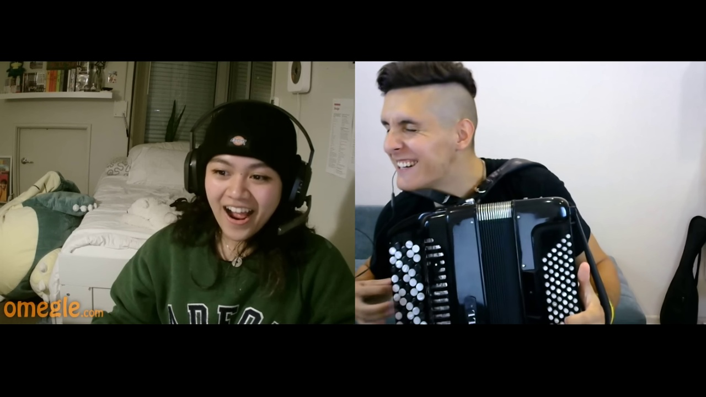
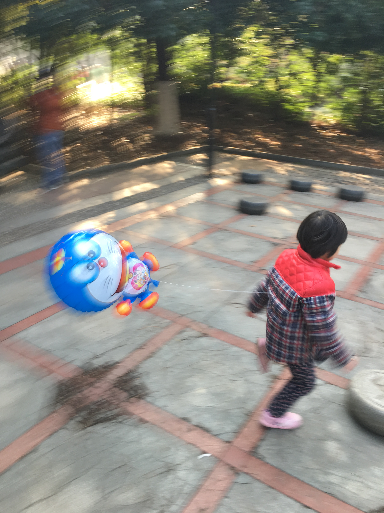

Evaluation Stages
Perception Identifying and localizing audio-visual elements
Q: Identify the categories of sound-emitting objects and how many instances of each category are making sounds.
A: {"car": "1"}
Q: Identify the categories of visible objects and how many different instances of each category are visible.
A: {"flower": "5", "tree": "5"}

Q: Generate the bounding-box of sound-emitting instances in the given image with the help of the given audio.
A: {"tuba_1": [153, 4, 107, 210], "tuba_2": [323, 57, 73, 155]}
Q: Are the contexts of audio and visual content matching?
A: no
Understanding Cross-modal retrieval and semantic comprehension
Q: Based on the given image as a reference, identify which sounds in the provided audio list contain the objects corresponding to the image.
A: Index list of matching audio clips

Q: Based on the given audio as a reference, identify which images in the provided image list contain the objects corresponding to the sound.
A: Index list of matching images
Q: Please describe what you see and hear in a single sentence based on the given audio and video.
A: "A baby is laughing and smiling while her mother is lying down next to her, talking to her."
Reasoning Complex inference and hallucination detection
Q: Is the car visible in the video?
A: yes
Q: Is the car making sound in the audio?
A: yes
Q: Is there a voiceover?
A: yes

Q: Segment the object in the given frames based on the given text reference. Reference: The sounding object near the man.
A: {"frame_0": [705, 359, 353, 229], ...}
Primitive Sensation Out-of-domain fundamental sensory evaluation
Three PriSe tasks: ASQA, VSQA, and AVSQA — designed to probe primitive sensory abilities on low-semantic, out-of-distribution stimuli.
Q: How many beats can you hear?
A: 3

Q: Is the background of the given image clear?
A: no
Q: Which object's area in the video has not changed?
A: square
Q: Which object produces sound first?
A: cube